Caminos
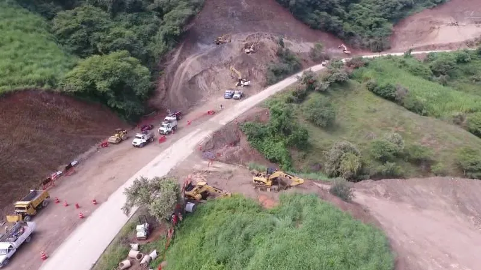
Modernización del camino Iguala – Teloloapan – Arcelia, km 111+500 al 117+500
Grupo Barkus / Centro SCT Guerrero
$104.9 MIVA incluido
Pavimentación asfáltica e hidráulica, caminos, terracerías, drenaje y edificación para gobiernos municipales, dependencias federales y empresas privadas.
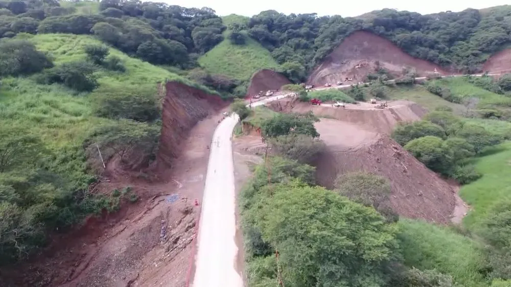
Urbanizaciones Mondragón, S.A. de C.V. es una empresa constructora mexiquense dedicada a la obra pública y privada de infraestructura vial, hidráulica y de edificación. Contamos con personal técnico especializado y maquinaria propia para ejecutar obras con calidad, en tiempo y dentro de presupuesto.
Ejecutar obras de infraestructura seguras y duraderas que mejoren la calidad de vida de las comunidades.
Ser la constructora de referencia en infraestructura vial del centro del país.
Desde las terracerías hasta la carpeta final: atendemos el ciclo completo de la obra vial e hidráulica.
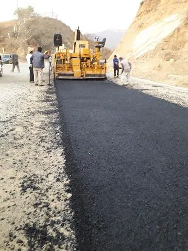
Carpetas de concreto asfáltico, fresado, recuperación en frío, bacheo y conservación de carreteras.
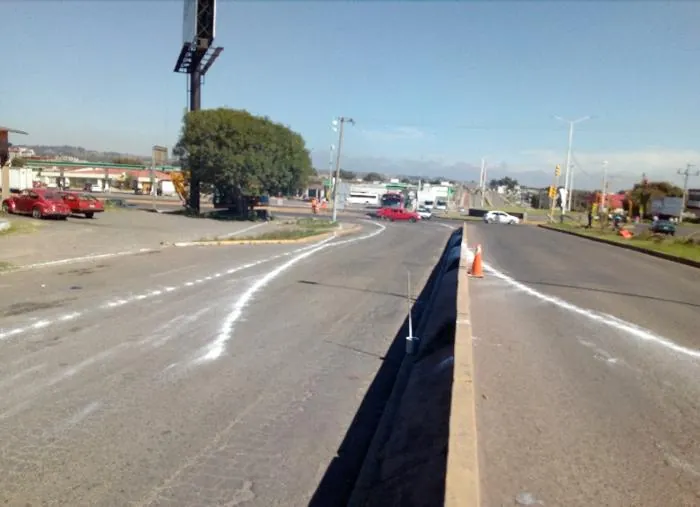
Terracerías, obras de drenaje, reconstrucción y ampliación de caminos; señalamiento horizontal y vertical.
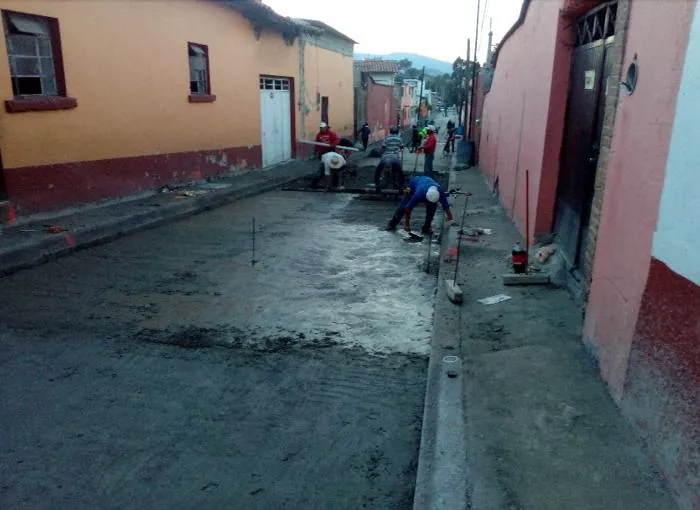
Pavimentación de calles con concreto hidráulico y estampado, empedrados y empedrados con mortero.
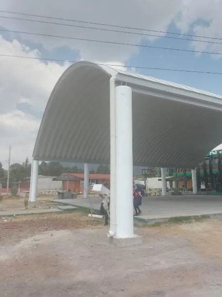
Bardas perimetrales, sanitarios, portones, fosas sépticas y obra complementaria en espacios públicos.
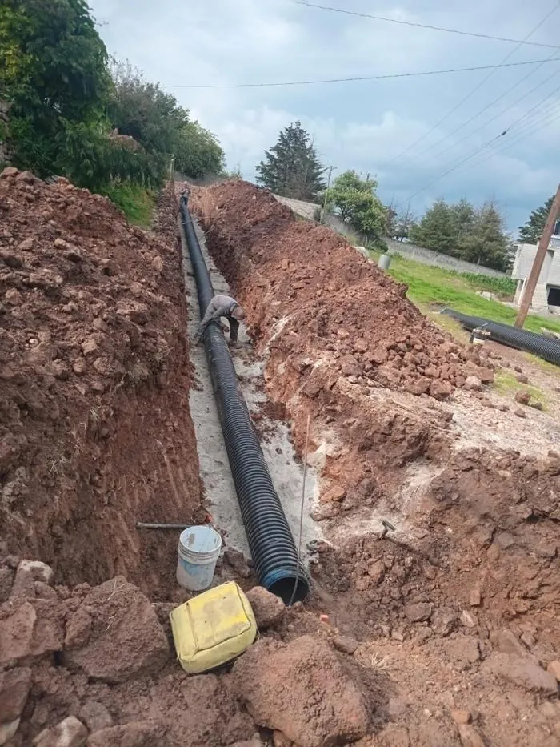
Drenaje sanitario, bordos de tierra compactada, tanques de almacenamiento y presas de gaviones.
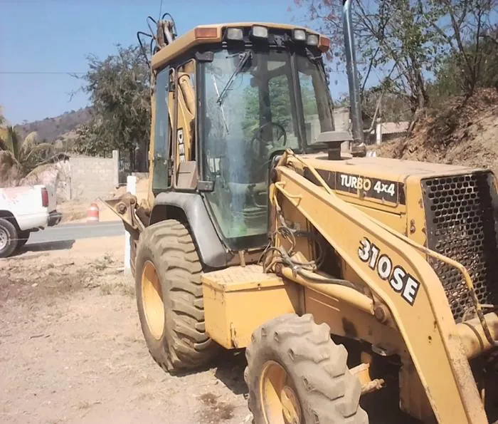
Alquiler de maquinaria pesada y camiones de carga con operador para todo tipo de obra.


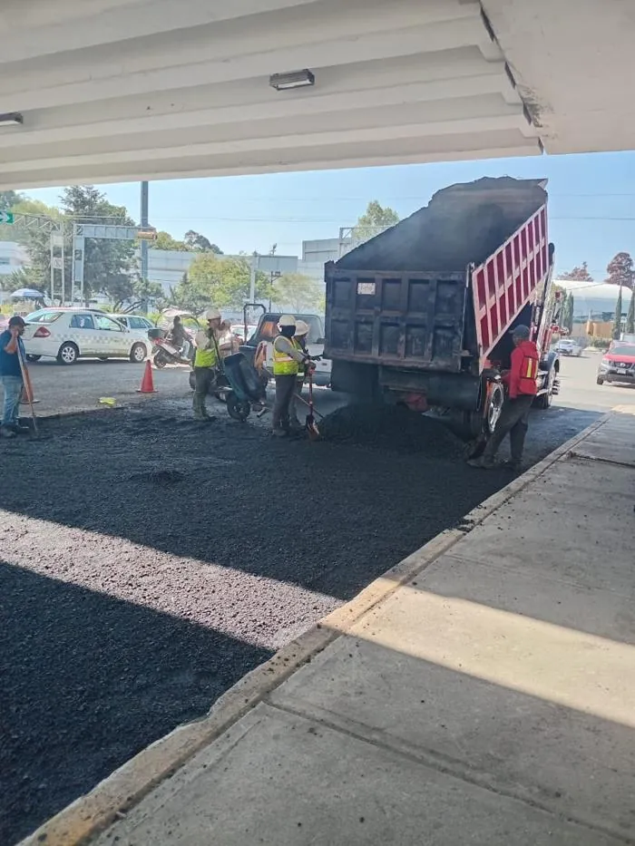
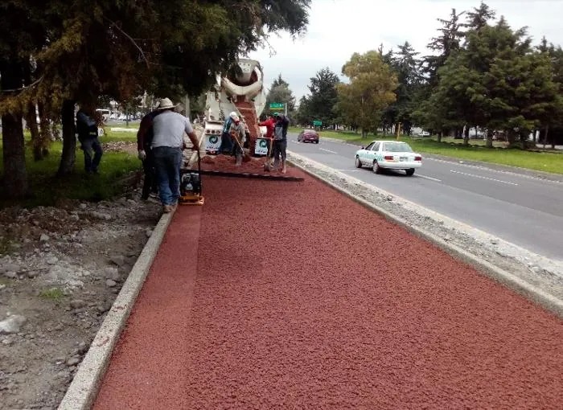
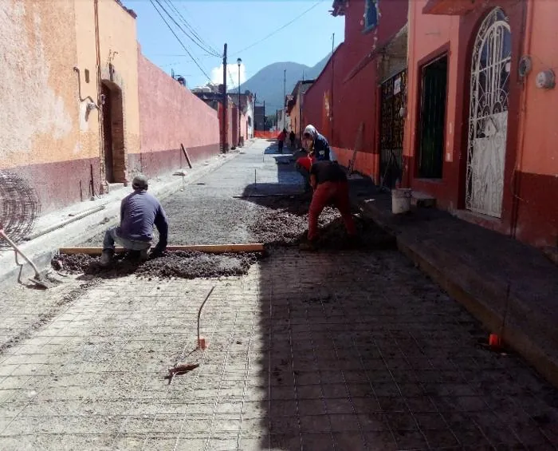
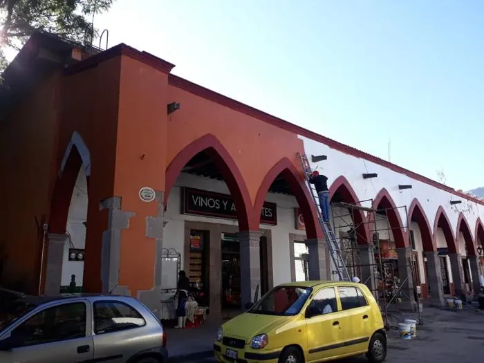
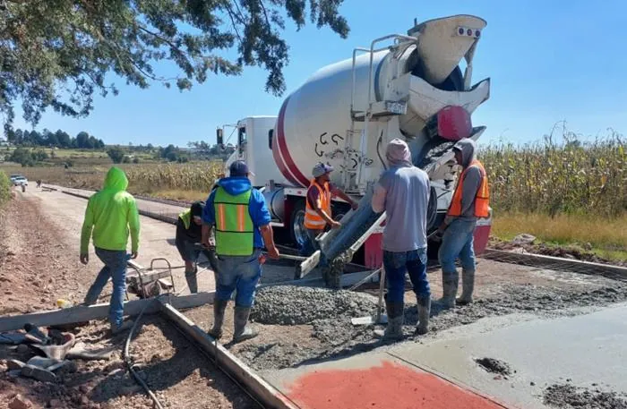


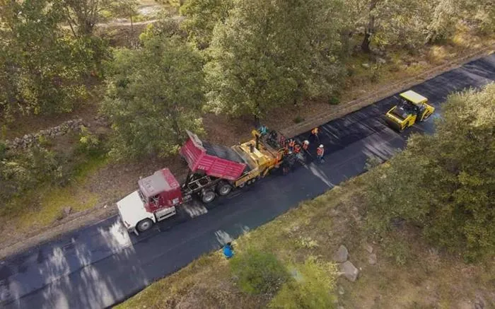
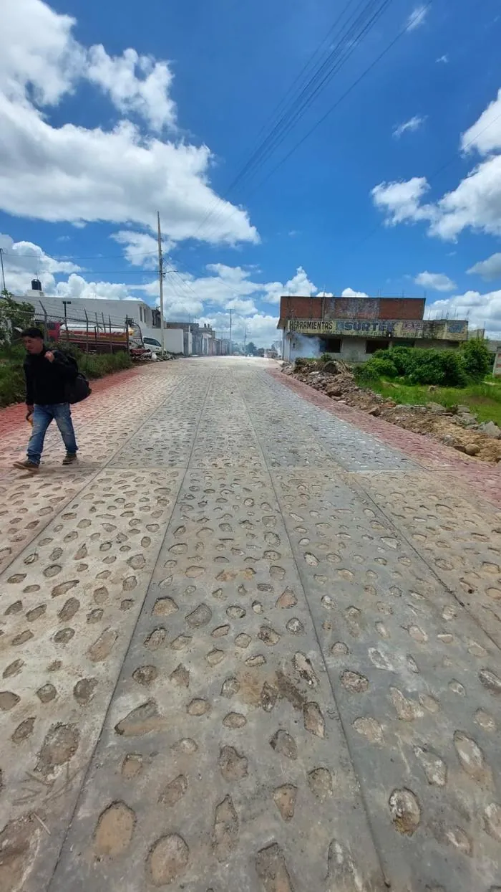
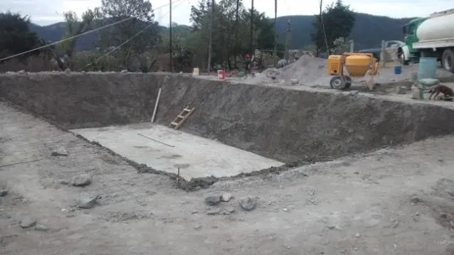
Contamos con 43 equipos propios —incluida planta de asfalto—, lo que nos da independencia operativa y control total sobre tiempos y calidad en obra.
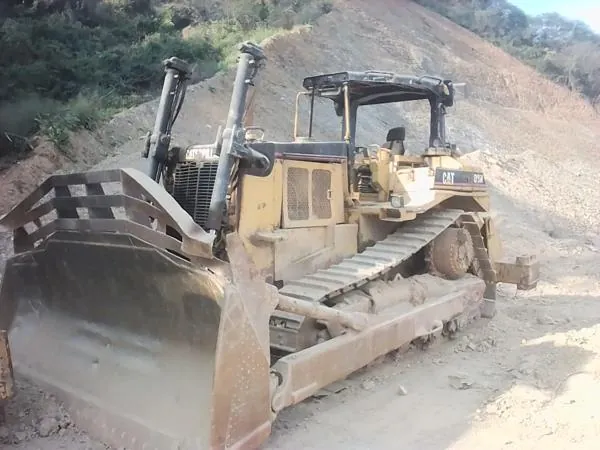
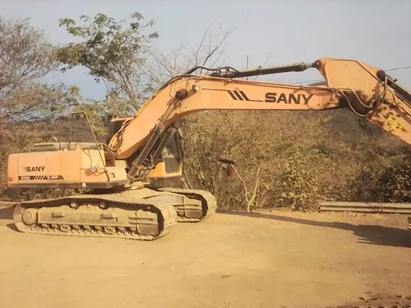
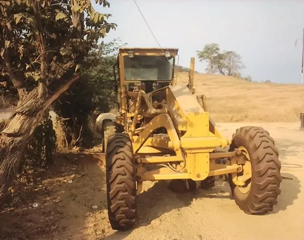
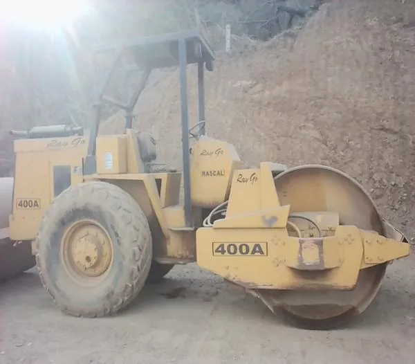
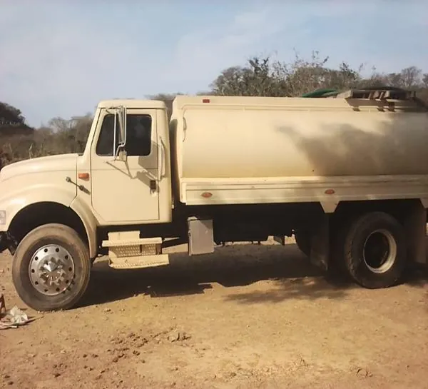
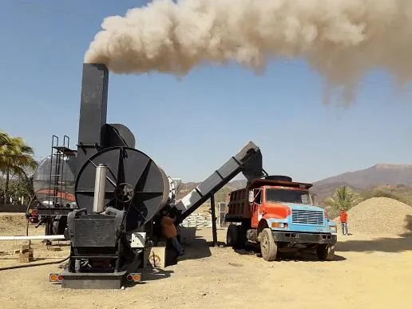

Documentación al corriente para participar en licitaciones públicas y contratos con la iniciativa privada.
Envíanos los datos de tu proyecto y te respondemos a la brevedad.